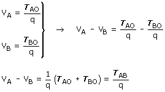

| Diferencia de potencial (En campo de carga puntual) Se define diferencia de potencial entre dos puntos A, B de un campo eléctrico,
al trabajo que realiza el campo por cada unidad de carga positiva (+1
C) que se desplaza desde A hasta B.  En la expresión de la d.d.p la carga Q se pone con signo Importante La d.d.p entre dos puntos tomados en el sentido del campo siempre es
positiva (Si el campo eléctrico está dirigido de A hacia
B, el trabajo al desplazarse la carga +1 C desde A hasta B será
positivo porque la fuerza ayuda al desplazamiento) |